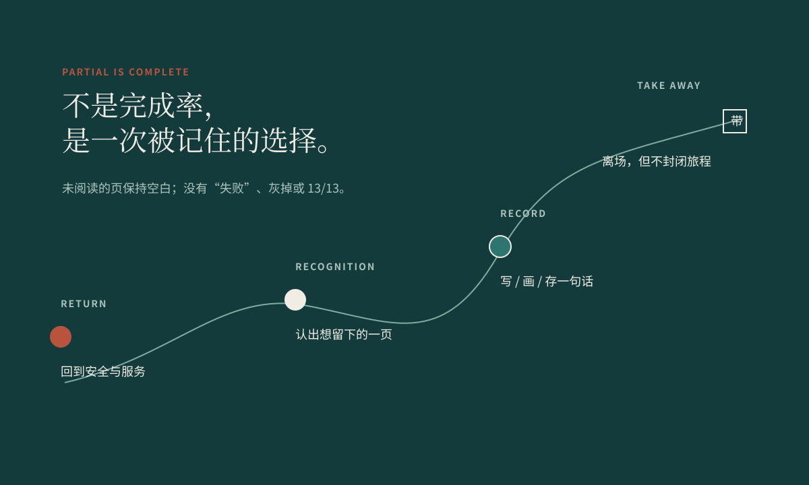
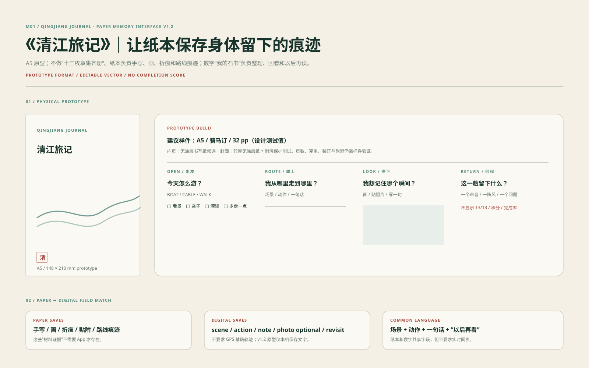
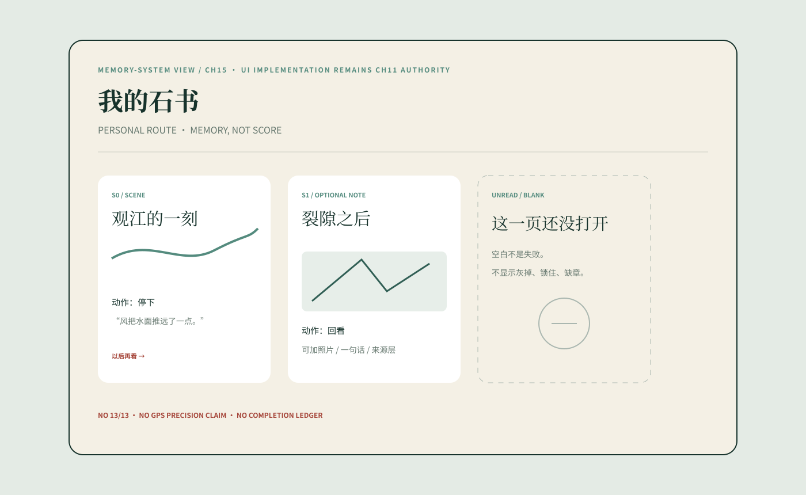
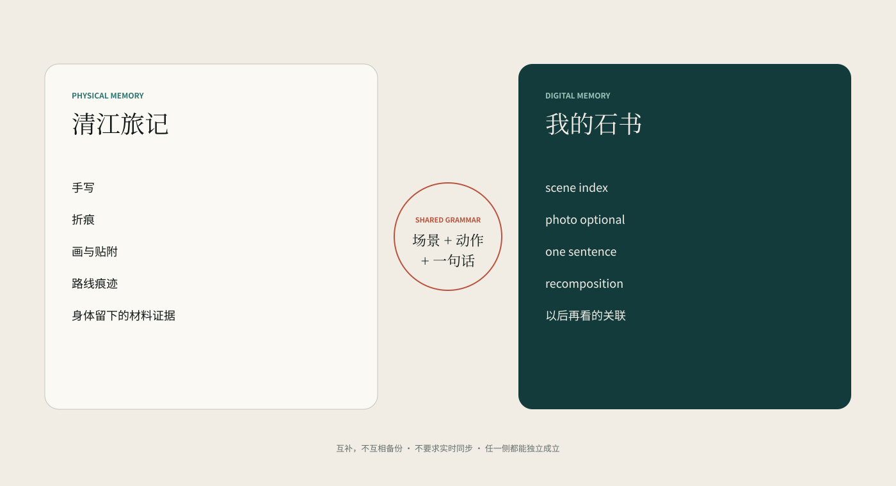
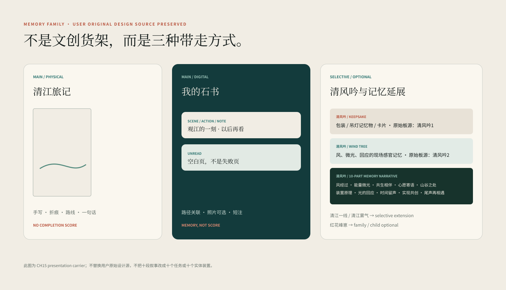
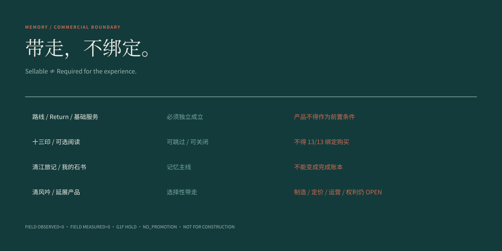

记忆不是“完成十三印”的奖品。回程之后，游客只带走自己愿意留下的那几页；未读、跳过和空白都仍然是完整旅程的一部分。
CH15 只处理离场后的延续：纸本、数字记录与选择性记忆物。路线、安全、服务和现场第一阅读仍由前序系统拥有。

纸本不是任务册，也不是 App 的打印版。它让手写、折痕、画、贴附与路线痕迹独立存在，即使没有网络、账户或手机，记忆仍能成立。

数字端只整理“我记住了什么”：场景、动作、一句话、可选照片与以后再看。没有 13/13、积分或失败页；未阅读内容保持空白。

纸本保留身体和材料发生过什么；数字保留场景如何被重新索引。两者共享“场景 + 动作 + 一句话”的语法，但任一侧都必须可以独立成立。

主线只有两件：清江旅记与我的石书。其他延展必须来自真实旅程里的材料、句子、观看或感官动作；没有足够证据的家族成员保持 HOLD，而不是为了“丰富文创”继续扩品。

一个物件可以被购买，但购买不能成为完成体验的条件。基础路线、Return 与免费体验必须独立成立；文化产品不能绑定 13/13、不能替代现场，也不能把未经授权的地方叙事包装成商品事实。
当前仍为远程研究原型：FIELD OBSERVED=0 / FIELD MEASURED=0 / G1F HOLD / NO_PROMOTION。
